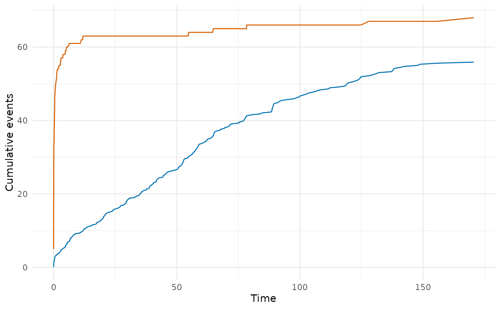

Compare a fitted hazard model against the nonparametric Kaplan-Meier
estimate by computing observed and expected (parametric) event counts
at each distinct event time. This is the R equivalent of the SAS
hazplot.sas macro and implements the conservation-of-events
diagnostic.
Value
A data frame with one row per time point and columns:
- time
Evaluation time.
- n_risk
Number at risk (Kaplan-Meier).
- n_event
Number of events at this time.
- n_censor
Number censored at this time.
- km_surv
Kaplan-Meier survival estimate.
- km_cumhaz
Kaplan-Meier cumulative hazard (\(-\log(\text{km\_surv})\)).
- par_surv
Parametric survival from the fitted model.
- par_cumhaz
Parametric cumulative hazard.
- cum_observed
Cumulative observed events to this time.
- cum_expected
Cumulative expected events (sum of individual cumulative hazards for observations exiting the risk set).
- residual
Expected minus observed (
cum_expected - cum_observed).
For multiphase models, additional columns are appended for each
phase: par_cumhaz_<phase>.
An attribute "summary" is attached with scalar diagnostics:
total observed events, total expected events, and the final residual.
Details
At each observed event time the function computes:
The Kaplan-Meier survival and cumulative hazard.
The parametric survival and cumulative hazard from the fitted model (and per-phase components for multiphase models).
Cumulative observed events vs. cumulative expected events (sum of individual cumulative hazards for those exiting the risk set at each time).
The running residual (expected minus observed).
Perfect model fit implies the expected and observed event counts track each other (residual near zero). This is the conservation-of-events principle.
See also
hzr_deciles() for decile-of-risk calibration,
predict.hazard() for prediction types.
Examples
# \donttest{
data(avc)
avc <- na.omit(avc)
fit <- hazard(
survival::Surv(int_dead, dead) ~ age + mal,
data = avc,
dist = "weibull",
theta = c(mu = 0.01, nu = 0.5, beta_age = 0, beta_mal = 0),
fit = TRUE
)
gof <- hzr_gof(fit)
print(gof)
#> Goodness-of-fit: observed vs. expected events
#> Distribution: weibull | n = 305
#>
#> Total observed events: 68
#> Total expected events: 55.9
#> Final residual (E - O): -12.1
#> Conservation ratio (E/O): 0.822
#>
#> Use plot columns: time, km_surv, par_surv, cum_observed, cum_expected, residual
# Plot observed vs expected events
if (requireNamespace("ggplot2", quietly = TRUE)) {
library(ggplot2)
ggplot(gof, aes(x = time)) +
geom_line(aes(y = cum_observed), colour = "#D55E00") +
geom_line(aes(y = cum_expected), colour = "#0072B2") +
labs(x = "Time", y = "Cumulative events") +
theme_minimal()
}

# }